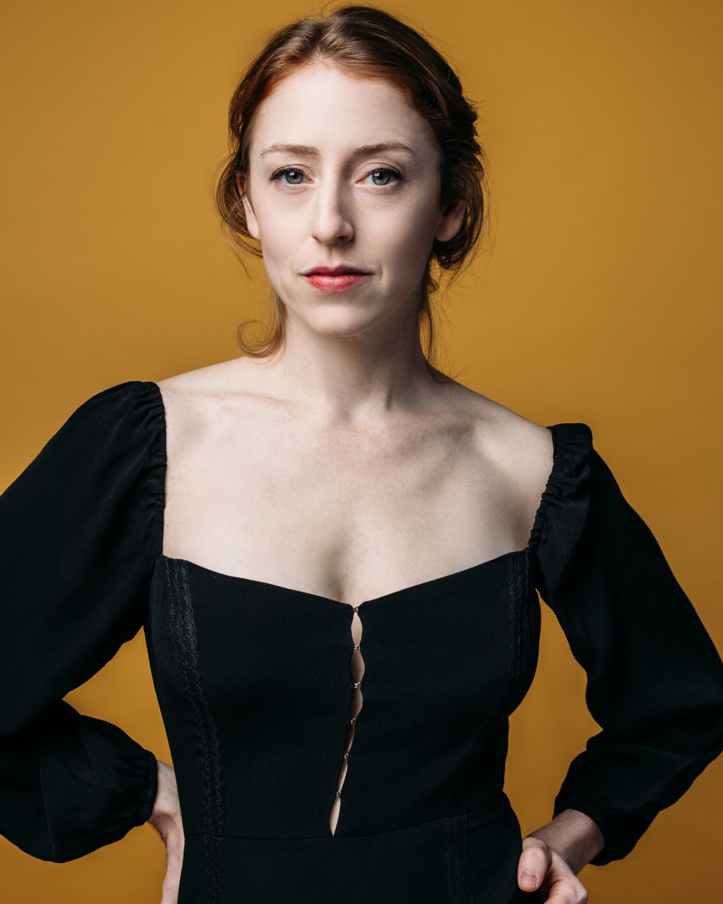
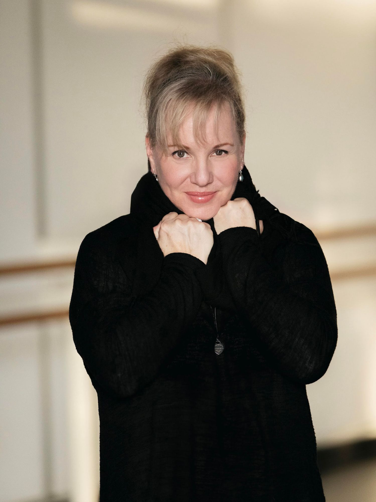
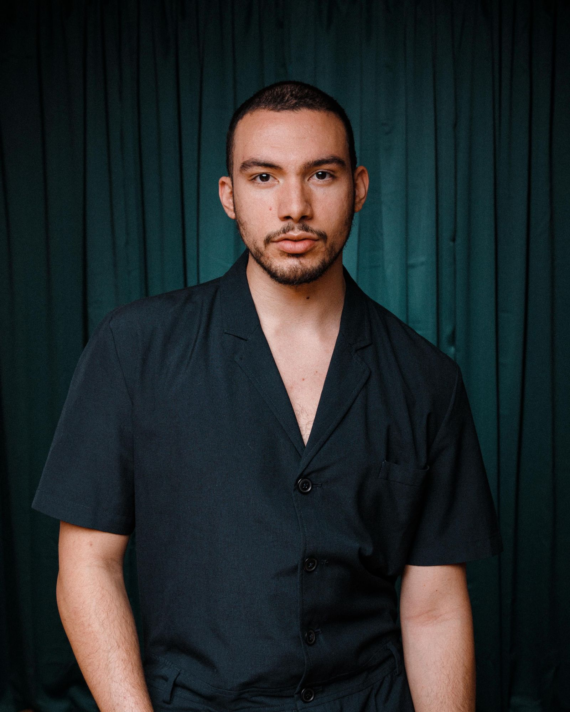

Founder & Executive Director, Inlet Arts · Co-Founder, RISE · Director, Board of Directors

Emily Schoen Branch is a choreographer, performer, and teacher based in the Pacific Northwest. Since 2011 she has led ESB Dance Projects, producing work across unconventional and international contexts, including a two-year collaboration with Tunisian dancers supported by Baryshnikov Arts Center and the US Embassy in Tunisia. She holds an MFA from the University of Washington and is a Princess Grace Fellowship nominee. Her research has been published by the American Journal of Arts Management.
Secretary, Board of Directors · Founder, CHOP SHOP: Bodies of Work

Eva Stone is a choreographer, producer, and teaching artist with over thirty years in the field. She founded CHOP SHOP: Bodies of Work in 2008 and led the festival for fourteen years. On faculty at Pacific Northwest Ballet School, she created New Voices, a nationally recognized choreography program for young women, and serves as Program Coordinator for Next Step. Her work has been commissioned by On the Boards, Pacific Northwest Ballet, and Seattle Art Museum, with premieres in New York, London, Geneva, Montreal, and St. Petersburg.
Director, Board of Directors

marco farroni leonardo (he/they) is a Dominican interdisciplinary artist based in Seattle, Washington, whose practice spans dance, performance, oral history, and mixed media. They hold a BFA in Dance from The University of the Arts (2017). marco is a co-founder of Black Collectivity, and a Pre-Doctoral Lecturer in the Department of Dance at the University of Washington, where they are currently pursuing their Master in Fine Arts.
Co-Founder, RISE
Cameo Lethem is a Seattle-based choreographer, curator, and arts administrator. She has served as panelist and curator for Velocity Dance Center and Base: Experimental Arts + Space, and held administrative roles at Whim W'Him, Spectrum Dance Theater, and American Dance Institute. She teaches at Cornish College of the Arts, Seattle University, and the University of Washington. Her work has earned funding from the City of Seattle and SeattleDances' Dance Crush Award. She is a current member of Velocity Dance Center's Artist Circle '26–'27.
Chair & Treasurer, Board of Directors
Lindsay Dillon grew up on Seattle's Eastside and developed a strong connection to the dance community from an early age. As a student at Pacific Northwest Ballet, she was exposed to both the timeless works of classical ballet and the cutting edge of choreography from contemporary artists. Dance has remained a constant throughout Lindsay's life. While living in New York City, Florence, Italy, San Francisco, and Chicago to pursue educational and career opportunities, she continued to make time for dancing and supporting the art form as a patron. Now back in Seattle, Lindsay brings 20 years of experience working across business and technology to the board. Her love of dance has never diminished, and she is excited to support a core personal belief: that everyone should have the opportunity to experience movement and dance from a young age.
Writer, artist, and cultural strategist. Widely praised as a "key cultural changemaker" (The Seattle Times). Former Artistic & Executive Director of Velocity Dance Center, author and editor of Artists on Creative Administration.
Choreographer and curator, Artistic Director of KEIGWIN + COMPANY. His work spans the Metropolitan Opera, Broadway, and 30 original works including Bolero, a large-scale community project commissioned in 16 communities nationwide.